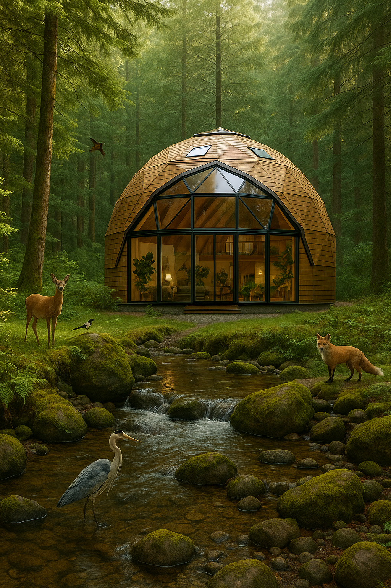

AI Image & Video Portfolio
Explore the AI images and videos I've created
Discover the art that AI and I have crafted
Images
Videos
Phoenix of the City
A futuristic skyline where skyscrapers form the wings of a massive phoenix rising from neon clouds. Sparks and embers trail behind as it soars through the night. The blend of metallic and fire textures creates a surreal, empowering vision.
The Whispering Tree
An ancient tree in a moonlit forest, its leaves glowing like tiny lanterns. Faces of ancestors faintly visible in the bark, whispering through the wind. Fireflies dance around the roots, and a gentle stream mirrors the stars above.
Candy-Coated Fashion
A coat designed entirely as a colorful small small circle gems chocolate. The scarf blend seamlessly into the chocolate white design, creating a playful mix of food and fashion. The bar of chocolate coat rests on a retro diner checkered table with extra white bars of chocolate around. Hyper-realistic, vibrant colors, whimsical and surreal colors
Anthropomorphic cat vlogging
A cute, anthropomorphic cat vlogging in modern India. The cat stands on two legs up on the longest building and showing enteir world, wearing trendy sunglasses and a small backpack, holding a selfie stick with a smartphone attached. The background features iconic elements of modern Indian architecture — high-rise buildings, metro tracks, glass offices, and a touch of cultural vibrancy like street art, auto rickshaws, or subtle temple domes in the distance. The lighting is bright and contemporary, giving a cinematic city-vlog feel. The overall mood is fun, energetic, and stylish — a perfect blend of tradition and modernity.
Colorful Aircraft
The texture of the colorful flowers is detailed and lifelike, with sunlight casting smooth highlights and soft shadows across the surface. The plane is mid-air, with realistic sky and clouds in the background — vibrant blue sky, scattered cumulus clouds below. The scene is cinematic and whimsical, blending realism with surreal charm. The airplane windows and engines are still visible, contrasting subtly with the furry exterior.
Forest Dream House

A dream home in the BC Canada forests with a creek next to it, a loft-style house with floor-to-ceiling windows in the front and shaped like a geodesic dome with skylights. Near the home add some birds and animals.
AI Cover Page
A moment of grace and awakening — the boy stands beneath heaven’s light as faith rises with the doves, marking the end of one story and the dawn of another.
Wings of Time
An old pocket watch opening mid-air, releasing thousands of tiny butterflies instead of gears. The wings shimmer in hues of gold and silver, dissolving into dust as they drift into the sunset.
NailArt - Cartoon Design
A close-up of a hand with long, manicured nails featuring five different cartoon-themed designs, each nail showing a unique and colorful character. The style is bright, cheerful, and playful, inspired by modern 3D cartoon aesthetics.
Butterfly Case
A highly detailed, realistic render of an iPhone 17 Pro Max featuring a butterfly-themed phone case. The case is adorned with colorful butterfly wings extending slightly from the sides, creating a graceful, airy appearance. The wings shimmer with iridescent hues of blue, pink, and violet, resembling real butterfly patterns with soft gradients and delicate veins. The phone’s metallic body subtly reflects ambient light, emphasizing its sleek, futuristic design. The background is minimal and elegant — softly blurred or white studio lighting — to highlight the phone and its ethereal, nature-inspired case. The overall mood is luxurious, creative, and dreamlike, blending cutting-edge technology with artistic beauty.
Cat Playing In CornField
Your browser does not support the video tag.
A playful orange tabby cat sitting in a cornfield. It plays with corn kernels on a wooden table, while behind it, the farmhouse and tall corn stalks create a rustic, peaceful scene.
Attacting Office
Your browser does not support the video tag.
Star Wars style stormtroopers invading a modern office, pastel theme.
Blooming Nature
Your browser does not support the video tag.
Star Wars–style stormtroopers invade a sleek modern office, bathed in soft pastel hues of pink, blue, and mint. Their white armor gleams against the minimalist décor — glass desks, glowing screens, and stylish chairs. The troopers move with purpose as stunned office workers watch.
Orange Tabby Cat Playing with Green Snake
Your browser does not support the video tag.
A green snake glided through the grass… For a brief, golden moment, the green snake was playing with the cat—a strange, tender dance of nature’s opposites.
Canva Story - The Giant and the Boy
Your browser does not support the video tag.
Pixar-style 3D cinematic showdown — David, small but unshaken, faces the towering Goliath. Goliath’s armor blazes in the sun; his sneer drips with arrogance. The sky behind them splits between storm clouds and warm light, symbolizing good versus evil. Dust swirls at their feet as both armies watch in silent awe.
Canva advertise Ice-cream of magnum
Your browser does not support the video tag.
Smooth Belgian chocolate, rich vanilla cream, and that unmistakable crack — the taste that makes time stop. Because some pleasures are meant to be savored, not rushed.
Canva Anime - Running Boy
Your browser does not support the video tag.
Every step begins the same — one foot before the other.In the quiet park, the air still cool, the world feels wide and kind. He runs not from something, but toward everything waiting ahead.
Color Explosion
Your browser does not support the video tag.
A dull gray room suddenly bursts into a rainbow explosion — walls ripple like liquid paint, objects transform into glowing shapes, and a shocked figure smiles as color floods the scene. Style: vivid, surreal, quick transformation.
← Back